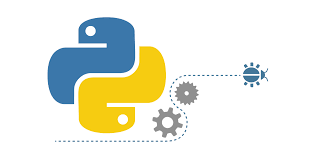

Linux¶
{kind=link}

1991 begann Linus Torvalds in Helsinki (Finnland) mit der Entwicklung, um unter anderem seinen eigenen Computer besser zu verstehen. Mit der Zeit merkte er, dass sich das System immer mehr zu einem Betriebssystem entwickelte. Heute ist Linux ein modular aufgebautes Betriebssystem und wird von Softwareentwicklern auf der ganzen Welt weiterentwickelt.
Linux wird vielfältig eingesetzt, beispielsweise auf Smartphones, Notebooks, Multimedia-Endgeräten und Supercomputern. Dies bringt auch zahlreiche Nutzer mit sich, darunter private Personen (wie du und ich), Regierungen, Organisationen und Unternehmen.
Git¶
Git ist eine freie Software zur verteilten Versionsverwaltuing von Dateien, die ebenfalls durch Linus Torvalds initiiert wurde. GitHub ist ein Onlinedienst, der unsere Entwicklungsprojekte auf seinen Servern bereitstellt (File-hosting). Die GitHub, Inc. hat ihren Sitz in San Francisco in den Vereinigten Staaten.
GitHub war im Jahr 2011 bei Open-Source-Software der populärste Dienst seiner Art, gemessen an der Anzahl der Schreibzugriffe (Commits). Der Dienst hat über 31 Millionen (31’000’000) registrierte Nutzer und verwaltet 96 Millionen Repositories (Stand: Oktober 2019). Im Oktober 2016 berichtete die Zeitschrift Nature über die zunehmende Bedeutung von GitHub für den Austausch von wissenschaftlichen Daten. Im Jahr 2016 hätten ein Prozent aller Veröffentlichungen in der Informatik GitHub als Quelle zitiert, gefolgt von Mathematik und den Biowissenschaften.

{kind=link}
{kind=link}
✏️ ..und wie siehst du aus im Git-Universum? Suche dir hier eine Verkleidung aus
Ein Repository laden¶
Es gibt typischerweise zwei Möglichkeiten ein GitHub Repository zu erhalten:
- Man nimmt einen lokalen Ordner und verwandelt diesen in ein GitHub Repository
- Man klont ein bestehendes Repository von GitHub
In beiden Fällen erhält man sein Repository lokal verfügbar auf der lokalen Festplatte.
Klonen eines Repositories¶
Um ein Repository zu klonen brauchst du den Befehl git clone <url>. Statt nur einer einfachen Kopie der Dateien kriegst du mit diesem Befehl alle Versionen, Daten und Dateien, die auf dem Server vorhanden sind.
$ git clone git@gitlab.organisation:user/repository.git
✏️ Findest du heraus, wie genau dein Befehl lauten muss?
Synchronisieren¶
Um alle neuen Dateien zu downloaden und Änderungen zu erhalten, gib den folgenden Befehl ein
$ git pull master
oder einfach
$ git pull
Änderungen hochladen¶
Nachdem du deinen Inhalt und Dateien geändert hast, muss du die Änderungen entsprechend auch an GitHub senden. Tust du das nicht, findest du auf deiner Homepage immer noch die alten Inhalte. Upload funktioniert über folgende Befehlsfolge:
- Speichere deine Files im richtigen Ordner auf deinem Computer
git statuszeigt dir an, welche Dateien noch hinzugefügt werden müssen (🔴) und welche bereits im stage warten (✅)git add .git commit -m "Beschreibe was bei diesem upload passiert"git push
Wenn du eine Datei im stage hast, die dort nicht hin gehört, kannst du diese auch wieder entfernen bevor das ganze Paket an GitHub gesendet wird. Dies tust du wie folgt:
git reset HEAD deine_datei
{kind=link}
Python¶
{kind=link}
Python ist eine weit verbreitete Programmiersprache und - wie du merken wirst - ganz einfach zu lernen! Heute wirst du in dieser Sprache eine eigene Webseite erstellen und darauf kuriose Programme laufen lassen!
Die mächtige Bibliothek ist eine der grössten Stärken von Python. Wie in der Bücher-Bibliothek kannst du in der Python-Bibliothek stöbern und dir gewisse Pakete ausleihen, die von anderen Leuten geschrieben wurden. Diese Pakete unterhalten dich, helfen dir Aufgaben zu lösen oder zeigen die neue Möglichkeiten. Bevor du also etwas selber programmierst, gehe immer zuerst in die Bibliothek und schau dich um, ob es schon etwas passendes gibt! 📚